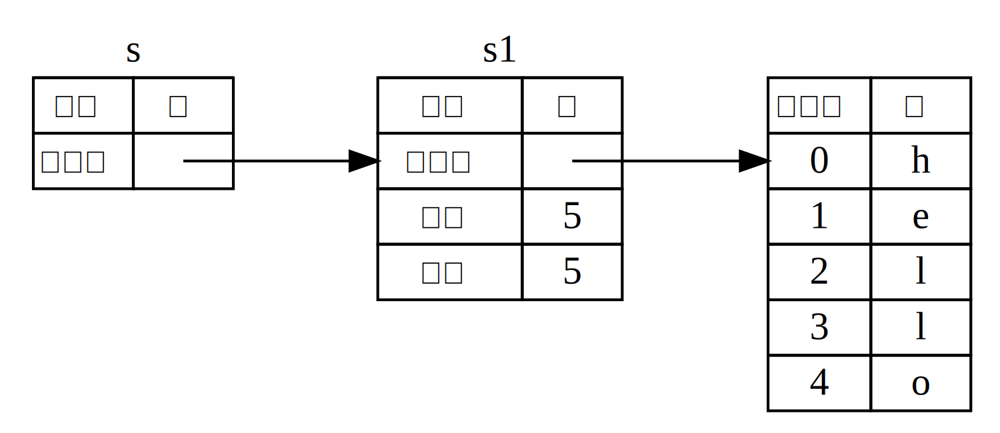

참조와 대여
앞 절 마지막에 등장한 예제 4-5에서는 String이 calculate_length로
이동해 버린 것 때문에 calclulate_length를 호출한 함수로 String을
반환하여, 함수 호출 이후에도 String을 사용할 수 있게 하였습니다.
이렇게 하는 대신 String 값의 참조자를 만들 수 있습니다.
참조자 (reference) 는 해당 주소에 저장된 데이터에 접근할 수 있도록
해주는 주솟값에 해당하는, 포인터와 같은 것입니다; 그 데이터는 다른 어떤
변수가 소유하고 있죠. 포인터와는 달리, 참조자는 살아있는 동안 특정 타입에
대한 유효한 값을 가리킴을 보장해 줍니다.
이번에는 값의 소유권을 넘기는 대신 개체의 참조자를 넘겨주는 방법을 소개하도록 하겠습니다.
다음은 참조자를 매개변수로 받도록 구현한 calculate_length 함수의 정의 및 용례입니다.
파일명: src/main.rs
fn main() { let s1 = String::from("hello"); let len = calculate_length(&s1); println!("The length of '{}' is {}.", s1, len); } fn calculate_length(s: &String) -> usize { s.len() }
먼저, 변수 선언부와 함수 반환 값에 위치하던 튜플 코드가 전부 사라진
것을 볼 수 있습니다. 또한 calculate_length 함수에 s1 대신 &s1을
전달하고, 함수 정의에 String 대신 &String을 사용했네요. 이 앰퍼센드
(&) 기호가 참조자를 나타내고, 어떤 값의 소유권을 가져오지 않고 해당 값을
참조할 수 있도록 해 줍니다. 그림 4-5는 이 개념을 도식화한 것입니다.

그림 4-5: &String s는 String s1을
가리킴
Note:
&를 이용한 참조의 반대는 역참조 (dereferencing) 라 합니다. 역참조 기호는*이며, 8장에서 몇 번 다뤄보고 15장에서 자세한 내용을 배울 예정입니다.
함수 호출부를 좀 더 자세히 살펴봅시다:
fn main() { let s1 = String::from("hello"); let len = calculate_length(&s1); println!("The length of '{}' is {}.", s1, len); } fn calculate_length(s: &String) -> usize { s.len() }
s1에 &를 붙인 &s1 구문은 s1 값을 참조하지만 해당 값을 소유하지
않는 참조자를 생성합니다. 값을 소유하지 않으므로 이 참조자가 가리킨 값은
참조자가 사용되지 않을 때까지 버려지지 않습니다.
마찬가지로 함수 시그니처에도 &를 사용하여 매개변수 s가 참조자 타입임을
나타내줍니다. 주석으로 보여드리겠습니다.
fn main() { let s1 = String::from("hello"); let len = calculate_length(&s1); println!("The length of '{}' is {}.", s1, len); } fn calculate_length(s: &String) -> usize { // s는 String의 참조자입니다 s.len() } // 여기서 s가 스코프 밖으로 벗어납니다. 하지만 참조하는 것을 소유하고 있진 않으므로, // 버려지지는 않습니다.
변수 s가 유효한 스코프는 여타 함수의 매개변수에 적용되는
스코프와 동일합니다. 하지만 s에는 소유권이 없으므로 s가
더 이상 사용되지 않을 때도 이 참조자가 가리킨 값이 버려지지
않습니다. 함수가 실제 값 대신 참조자를 매개변수로 쓴다면
애초에 소유권이 없으니까 이 소유권을 돌려주기 위한 값 반환도
필요 없어집니다.
또한, 이처럼 참조자를 만드는 행위를 대여 (borrow) 라고 합니다. 현실에서도 여러분이 다른 사람이 소유하고 있는 뭔가를 빌리고, 용무가 끝나면 돌려주는 것처럼요. 여러분의 소유가 아니니까요.
그럼 빌린 값을 수정하면 어떻게 될까요? 예제 4-6 코드를 실행해 보면 알 수 있으나, 미리 말씀드리자면 이 코드는 작동하지 않습니다:
파일명: src/main.rs
fn main() {
let s = String::from("hello");
change(&s);
}
fn change(some_string: &String) {
some_string.push_str(", world");
}예제 4-6: 빌린 값을 수정해 보는 코드
나타나는 에러는 다음과 같습니다:
$ cargo run
Compiling ownership v0.1.0 (file:///projects/ownership)
error[E0596]: cannot borrow `*some_string` as mutable, as it is behind a `&` reference
--> src/main.rs:8:5
|
7 | fn change(some_string: &String) {
| ------- help: consider changing this to be a mutable reference: `&mut String`
8 | some_string.push_str(", world");
| ^^^^^^^^^^^^^^^^^^^^^^^^^^^^^^^ `some_string` is a `&` reference, so the data it refers to cannot be borrowed as mutable
For more information about this error, try `rustc --explain E0596`.
error: could not compile `ownership` due to previous error
변수가 기본적으로 불변성을 지니듯, 참조자도 마찬가지로 참조하는 것을 수정할 수 없습니다.
가변 참조자
가변 참조자 (mutable reference) 를 사용하는 식으로 예제 4-6을 살짝만 수정하면 에러를 없앨 수 있습니다:
파일명: src/main.rs
fn main() { let mut s = String::from("hello"); change(&mut s); } fn change(some_string: &mut String) { some_string.push_str(", world"); }
우선 s를 mut 로 변경합니다. 그런 다음 change 함수를 호출하는 곳에서
&mut s로 가변 참조자를 생성하고, 이 함수에서 가변 참조자를 전달받도록
some_string: &mut String으로 수정합니다. 이는 change 함수가
빌린 값을 수정할 수 있음을 매우 명확하게 해 줍니다.
가변 참조자는 한 가지 큰 제약사항이 있습니다: 어떤 값에 대한 가변 참조자가
있다면, 그 값에 대한 참조자는 더 이상 만들 수 없습니다. 아래의 코드는
s에 대한 두 개의 가변 참조자 생성을 시도하는 코드로, 작동하지 않습니다:
파일명: src/main.rs
fn main() {
let mut s = String::from("hello");
let r1 = &mut s;
let r2 = &mut s;
println!("{}, {}", r1, r2);
}에러는 다음과 같습니다:
$ cargo run
Compiling ownership v0.1.0 (file:///projects/ownership)
error[E0499]: cannot borrow `s` as mutable more than once at a time
--> src/main.rs:5:14
|
4 | let r1 = &mut s;
| ------ first mutable borrow occurs here
5 | let r2 = &mut s;
| ^^^^^^ second mutable borrow occurs here
6 |
7 | println!("{}, {}", r1, r2);
| -- first borrow later used here
For more information about this error, try `rustc --explain E0499`.
error: could not compile `ownership` due to previous error
이 에러는 s를 가변으로 두 번 이상 빌려올 수 없기 때문에 코드가
유효하지 않다고 말해줍니다. 첫 번째 가변 대여는 r1에 있고,
println!에서 사용될 때까지 남아있어야 하지만, 이 가변 참조자의
생성과 사용 사이에서 r1과 같은 데이터를 빌리는 r2의 가변 참조자를
만들려고 있습니다.
같은 데이터에 대하여 동시에 여러 가변 참조자의 사용을 막는 이러한 제약은 값의 변경에 대한 제어가 원활하도록 해 줍니다. 대부분의 언어들이 언제든 값 변경을 허용하기 때문에, 러스트에 갓 입문한 사람들에게는 장애물처럼 다가올 수 있습니다. 하지만, 이 제약 덕분에 러스트에서는 컴파일 타임에 데이터 경합 (data race) 을 방지할 수 있습니다. 데이터 경합이란 다음 세 가지 상황이 겹칠 때 일어나는 특정한 경합 조건 (race condition) 입니다:
- 둘 이상의 포인터가 동시에 같은 데이터에 접근
- 포인터 중 하나 이상이 데이터에 쓰기 작업을 시행
- 데이터 접근 동기화 메커니즘이 없음
데이터 경합은 정의되지 않은 동작을 일으키며, 런타임에 추적하려고 할 때 문제 진단 및 수정이 어렵습니다. 하지만 러스트에서는 데이터 경합이 발생할 가능성이 있는 코드의 컴파일을 거부하는 것으로 이 문제를 막아줍니다!
중괄호로 새로운 스코프를 만들어, 가변 참조자를 여러 개 만들면서 동시에 존재하는 상황을 회피하는 방법이 있습니다:
fn main() { let mut s = String::from("hello"); { let r1 = &mut s; } // 여기서 r1이 스코프 밖으로 벗어나며, 따라서 아무 문제없이 새 참조자를 만들 수 있습니다. let r2 = &mut s; }
가변 참조자와 불변 참조자를 혼용할 때도 유사한 규칙이 적용됩니다. 다음 코드는 컴파일 에러가 발생합니다:
fn main() {
let mut s = String::from("hello");
let r1 = &s; // 문제없음
let r2 = &s; // 문제없음
let r3 = &mut s; // 큰 문제
println!("{}, {}, and {}", r1, r2, r3);
}에러는 다음과 같습니다:
$ cargo run
Compiling ownership v0.1.0 (file:///projects/ownership)
error[E0502]: cannot borrow `s` as mutable because it is also borrowed as immutable
--> src/main.rs:6:14
|
4 | let r1 = &s; // no problem
| -- immutable borrow occurs here
5 | let r2 = &s; // no problem
6 | let r3 = &mut s; // BIG PROBLEM
| ^^^^^^ mutable borrow occurs here
7 |
8 | println!("{}, {}, and {}", r1, r2, r3);
| -- immutable borrow later used here
For more information about this error, try `rustc --explain E0502`.
error: could not compile `ownership` due to previous error
휴우! 어떤 값에 대한 불변 참조자가 있는 동안 같은 값의 가변 참조자를 만드는 것 또한 불가능합니다.
불변 참조자를 사용하는 쪽에서는 사용 중 값이 중간에 변경되리라 예상하지 않으니까요. 반면 데이터를 읽기만 하는 기능으로는 다른 쪽에서 값을 읽는 기능에 영향을 주지 않으므로, 여러 개의 불변 참조자를 만드는 것은 가능합니다.
참조자는 정의된 지점부터 시작하여 해당 참조자가 마지막으로
사용된 부분까지 유효합니다. 즉, 다음 코드는 불변 참조자가 마지막으로
사용되는 println! 이후에 가변 참조자의 정의가 있으므로 컴파일 에러가
발생하지 않습니다.
fn main() { let mut s = String::from("hello"); let r1 = &s; // 문제없음 let r2 = &s; // 문제없음 println!("{} and {}", r1, r2); // 이 지점 이후로 변수 r1과 r2는 사용되지 않습니다 let r3 = &mut s; // 문제없음 println!("{}", r3); }
불변 참조자 rl, r2의 스코프는 자신들이 마지막으로 사용된
println! 이후로 종료되고, 해당 println!은 가변 참조자 r3가
생성되기 전이니 서로 스코프가 겹치지 않아서 이 코드는 문제가 없는 것이죠:
컴파일러는 이 참조자가 어떤 지점 이후로 스코프 끝까지 사용되지 않음을
알 수 있습니다.
이러한 제약 때문에 좀 골치 아플 수도 있습니다만, 이는 러스트 컴파일러가 코드에 숨어 있는 버그를 런타임이 아닌 컴파일 타임에 일찌감치 찾아내어 어느 부분이 문제인지 정확히 집어주는 기능이란 점을 기억해주세요. 이렇게 하면 원하는 데이터가 나오지 않는 원인을 하나하나 추적하지 않아도 됩니다.
댕글링 참조
댕글링 포인터 (dangling pointer) 란, 어떤 메모리를 가리키는 포인터가 남아있는 상황에서 일부 메모리를 해제해 버림으로써, 다른 개체가 할당받았을지도 모르는 메모리를 참조하게 된 포인터를 말합니다. 포인터가 있는 언어에서는 자칫 잘못하면 이 댕글링 포인터를 만들기 쉽죠. 하지만 러스트에서는 어떤 데이터의 참조자를 만들면, 해당 참조자가 스코프를 벗어나기 전에 데이터가 먼저 스코프를 벗어나는지 컴파일러에서 확인하여 댕글링 참조가 생성되지 않도록 보장합니다.
댕글링 참조를 만들어서 러스트가 어떤 식으로 이것을 컴파일 타임에 방지하는지 살펴봅시다:
파일명: src/main.rs
fn main() {
let reference_to_nothing = dangle();
}
fn dangle() -> &String {
let s = String::from("hello");
&s
}에러는 다음과 같습니다:
$ cargo run
Compiling ownership v0.1.0 (file:///projects/ownership)
error[E0106]: missing lifetime specifier
--> src/main.rs:5:16
|
5 | fn dangle() -> &String {
| ^ expected named lifetime parameter
|
= help: this function's return type contains a borrowed value, but there is no value for it to be borrowed from
help: consider using the `'static` lifetime
|
5 | fn dangle() -> &'static String {
| +++++++
For more information about this error, try `rustc --explain E0106`.
error: could not compile `ownership` due to previous error
아직 다루지 않은 라이프타임이라는 내용이 에러 메시지에 등장하는데, 라이프타임은 10장에서 다룰 예정이니 일단 무시하도록 하겠습니다. 이 코드가 문제가 되는 이유를 알려주는 핵심 내용은 다음과 같습니다:
this function's return type contains a borrowed value, but there is no value for it to be borrowed from.
(해석: 이 함수는 빌린 값을 반환하고 있으나, 빌린 실제 값이 존재하지 않습니다.)
dangle 함수에서 어떤 일이 일어나는지
단계별로 알아봅시다:
파일명: src/main.rs
fn main() {
let reference_to_nothing = dangle();
}
fn dangle() -> &String { // dangle은 String의 참조자를 반환합니다
let s = String::from("hello"); // s는 새로운 String입니다
&s // String s의 참조자를 반환합니다
} // 여기서 s는 스코프 밖으로 벗어나고 버려집니다. 해당 메모리는 해제됩니다.
// 위험합니다!s는 dangle 함수 내에서 생성됐기 때문에,
함수가 끝날 때 할당 해제됩니다.
하지만 코드에서는 &s를 반환하려 했고, 이는 유효하지 않은 String을 가리키는
참조자를 반환하는 행위이기 때문에 에러가 발생합니다.
따라서, 이런 경우엔 String을 직접 반환해야 합니다:
fn main() { let string = no_dangle(); } fn no_dangle() -> String { let s = String::from("hello"); s }
이 코드는 정상적으로 작동합니다. 소유권은 이동되며, 할당 해제되지도 않죠.
참조자 규칙
참조자에 대해 배운 내용을 정리해 봅시다:
- 여러분은 단 하나의 가변 참조자만 갖거나, 여러 개의 불변 참조자를 가질 수 있습니다.
- 참조자는 항상 유효해야 합니다.
다음으로 알아볼 것은 참조자의 또 다른 종류인 슬라이스 (slice) 입니다.